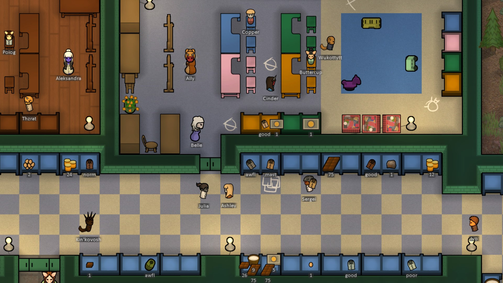

The Biotech DLC
Biotech is a DLC for RimWorld that focuses on children and reproduction, expanding on mechanoids, and xenohumans/genetic modification. of Upon release (21.08.2022), it has managed to become one of the highest grossing DLCs on Steam.
Children and reproduction
With Biotech, colonists (and outsiders) can become pregnant and give birth. Pregnancy can begin naturally, or via technological means, and can be controlled by a variety of methods. Babies bring joy, but also challenges. Colonists' hearts will melt when the baby coos and giggles in their arms. But it takes effort to keep a baby happy and healthy and loved - create a safe haven for them in a cozy pastel nursery where there is always warm milk, a comfortable crib, overflowing toy chests and kind caregivers. A rich childhood makes a capable adult. Every few years, you choose which traits and passions a child will develop. The better-raised a child is, with smarter education and more attention, the more choices you'll have, and the better their chances are to become a happy and talented adult. Some colonies will sacrifice everything to give a child the best upbringing, while others will use growth vats to pump out cheap workers and soldiers. The choice is up to you.
Mechanitors
Build and control mechanoids by making your colonist into a mechanitor - a person with a special brain implant that lets them psychically command semi-living machines. Create mechanoids by growing them inside high-tech gestator tanks. Command the original centipede, lancer, and scyther, plus a wide variety of new combat and labor mechanoids. Grow your swarm from a few small workers and fighters to a fearsome squadron of massive ultratech war machines and industrial behemoths. Mechanoid laborers can manufacture goods, rescue and tend to your colonists, build and repair structures, sow and harvest crops, haul stuff, and more. They never get sick. They don't freeze in the snow or get poisoned in toxic fallout. They don't suffer mental breaks from long hours in dark mineshafts or filthy garbage yards. Combat mechanoids are very diverse in form and function. Some are cheap swarmers that overwhelm the enemy with numbers. Others project shields over their allies, or roast enemies with beam weapons, or charge up for massive concrete-melting hellsphere attacks. Mechanoids wield melee claws and blades, sniper weapons, even flamethrowers. Depending on which mechanoids you command, your tactical options will vary dramatically. Mechanoid infrastructure has a special price: Pollution.
Gestating or charging colony mechanoids creates toxic wastepacks as a harmful by-product. Left unfrozen, these toxic wastepacks deteriorate and leak pollutants into the environment, creating pollution. Pollution makes living things sick. It poisons your colonists and pets. It blocks the sunlight with smog and irritates your colonists' lungs. It triggers hibernating insects to emerge on the planet's surface. Some areas of the planet are so polluted that only twisted, toxin-adapted variants of plants and animals can survive there. Pollution is a challenge that you can handle in a variety of ways - storage by freezing, disposal through transport pods (creating pollution on the World Map which neighboring factions dislike), use of Polux trees, or high-tech destruction through wastepack atomizers. Advance your mechanitor's capabilities by acquiring ancient mechanoid technology. This means calling dangerous new super-mechanoids to attack, in order to defeat them and steal technology from their smoking corpses. There are three types of hyper-deadly commander mechs to fight, each with its own weapons and combat style. Be sure you're ready before you call these machine beasts to attack. Learn enough, and some day, you may command them as your own.
Gene Modding
You can genetically-modify people to create xenohumans - humans with exotic traits. Genetic modifications range from subtle personality traits and eye color to hulking furry bodies, glands for fire-breathing, rapid regeneration, and even immortality. The world contains a new set of xenohuman types and factions, including unstoppable super soldiers, fur-covered animal-controlling arctic settlers, toxin-immune human bioweapons, fire-breathing horned desert imp-people, psychic-bonding concubines, and more. The darkest of them drink blood, live in shadows, and live forever. You can make your own xenotypes from scratch, and build infrastructure in your colony to enhance your people. Curate a collection of exotic genes by purchasing them from traders, accepting them as quest rewards, or extracting them from your menagerie of xenohuman prisoners. You can harvest the genes from anyone and implant those genes into your colonists and prisoners. You can also recombine genes to make bizarre and advantageous mixes of traits for implantation. Experiment with gene extraction and recombination to build your colony of xenohumans!